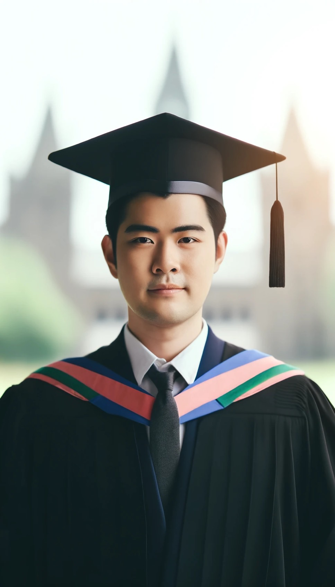

มุมมองตอนนี้ของผมเกี่ยวกับอนาคต ในตอนนี้คงไม่มีอะไรสำคัญไปกว่าการตั้งใจเรียนเพื่อที่จะเรียนให้จบ จริงๆแล้วถามว่าในอนาคตแพลนไว้ว่า จะทำอะไรก็มีแพลนๆไว้บ้างแล้ว เช่นอยากเป็นเจ้าของบริษัทเทคโนโลยีอะไรประมาณนี้ รองลงมาคือเป็นเจ้าของร้านอาหารเพราะด้วยความชอบ ส่วนตัวแล้ว นอกเหนือจากนี้ก็อยากที่จะเลี้ยงดูพ่อแม่ มีความสุขกับบั้นปลายชีวิต แต่กว่าจะถึงตอนนั้นตัวผมในปัจจุบันที่กำลังนั่งเขียนโค้ดนี่อยู๋ คงไม่สามารถทำอะไรได้ไปมากกว่าการตั้งใจเรียน เรื่องในอนาคตปล่อยให้ตัวผมในอนาคตเป็นคนจัดการไปดีกว่า ตอนนี้ขอโฟกัสกับปัจจุบันไว้ก่อน ชีวิตคนเรามันไม่แน่นอนเพราะแบบนี้ เราจึงอยู่กับปัจจุบันให้มากและทำปัจจุบันให้ดีที่สุดก็พอแล้ว ในภาพด้านล่างนี้เป็นภาพที่ผมให้ Ai สร้างให้นะครับ เพราะตัวผมยังไปไม่ถึงจุดนั้น
